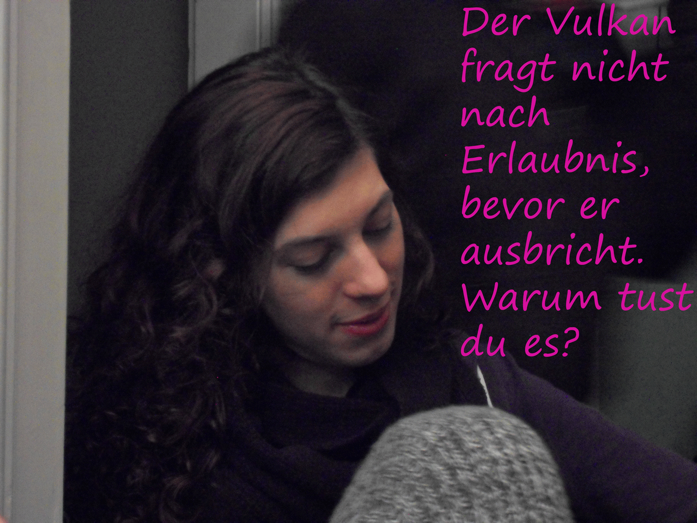

Dr. Lotterliese van der Pferdestall
Ihre Psychotherapeutin in Wien
📞 24/7 Notfall-Hotline: 0800-LOTTERLIE
✉️ E-Mail: lotterliese@pferdestall-therapie.at
Dr.Lotterliese - Psychotherapie im Pferdestall
Ihre Psychotherapeutin in Wien
📞 24/7 Notfall-Hotline: 0800-LOTTERLIESE
✉️ E-Mail: lotterliese@pferdestall-therapie.at
Warum ich die beste Wahl für Sie bin!
Liebe Leidensgenoss:innen, zappelige Seelen und ruhelose Geister!
Als Spezialistin für Planetenverschiebung und Zappelphilippsyndrom biete ich Ihnen einen einzigartigen Therapieansatz direkt aus meinem umgebauten Pferdestall in Wien-Döbling.
Mein revolutionärer Ansatz:
Kombination aus radikalem Liebsein, paradoxer Fern- und Näheverhältnismässigkeit, Reden-beim-Tanzenpferdegestützter Intervention (Ride the horses!) und Zappelphilipp-Bewegungstherapie. Wir arbeiten nicht nur an Ihrem Geist, sondern geben auch Ihren unruhigen Beinen Raum!

Für wen ist meine Praxis ideal?
• Wenn Sie bei über 110dzb und 180bpm nicht die Klappe halten können
• Wenn Ihre Beine nachts eigenständige Tanzperformances veranstalten
• Wenn Sie einfach mal wieder quatschen wollen
• Wenn Sie schon mal versucht haben, sitzend zu meditieren und nach 30 Sekunden aufgesprungen sind
• Frosch im Klo
• Kloß im Hals
Erfolgsgeschichten meiner Patienten
Herr Rafi - Kann mensch oft nichts ausmachen!
"Nach nur 3 Monaten bei Dr. Lotterliese kann ich endlich ein ganzes Meeting durch reiten!"
Mehr lesen...Frau Wolfi - Chronische Fehlstellung des Mondes
"Meine Beine haben endlich gelernt, nachts zu schlafen statt zu tanzen!"
Mehr lesen...Vereinbaren Sie noch heute Ihren Termin!
Praxiszeiten: Montag bis Freitag 8:00-20:00
24-Stunden-Notfallservice für akute Zappelattacken
Praxisadresse:
Pferdestall-Therapiezentrum
Hufgasse 17, 1190 Wien
(Eingang neben den Boxen 3 und 4)